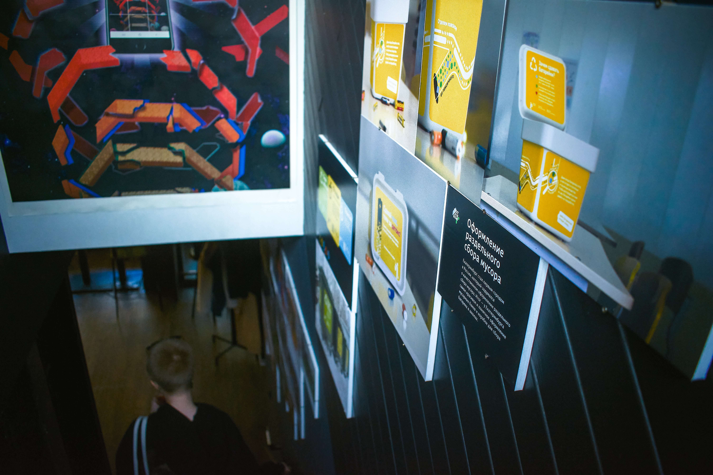
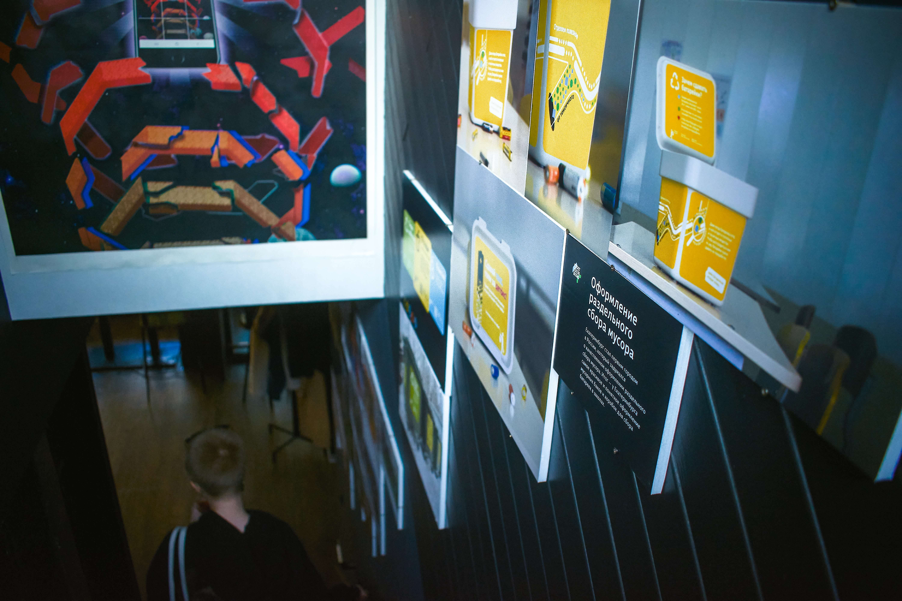
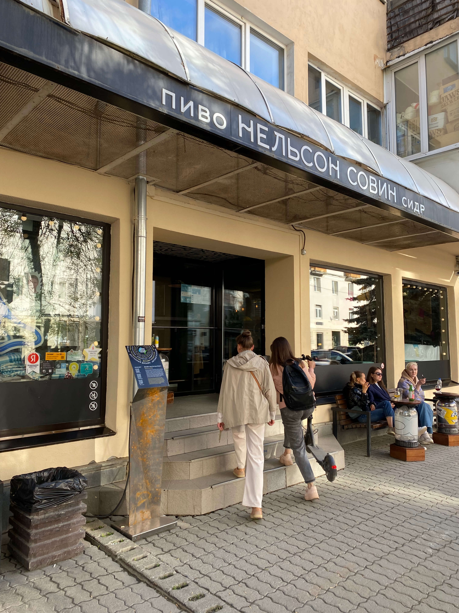
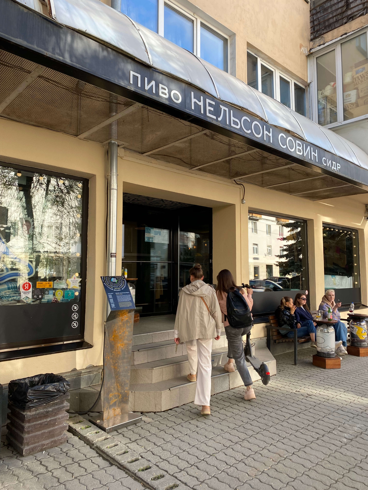

Отчёт «Дизайн-кода Екатеринбурга»
В 2022 году вопреки всему у нас получилось остаться на плаву, остаться вместе и сделать ещё больше дел, чем когда-либо. Это невероятно! И раз так вышло, на этой странице мы расскажем о наших достижениях за самый сложный год.
1. Сформулировали понятие глобальной дизайн-системы
Обычно под дизайн-системой подразумевают систему в рамках одного вида дизайна, например в графе, вебе или проме — и зачастую они разрабатываются отдельно друг от друга.
Екатеринбург — это единственный город, где все виды дизайна: граф, пром, веб, архитектура и т. д. — разрабатываются совместно, под одной крышей, на одних ценностях и константах. Всё идеально переплетено между собой: от иконок до общественных пространств.

2. Запустили свой новый сайт
Полностью обновили сайт о дизайне Екатеринбурга. Показали все проекты и всех, кто их делает. Кстати, сейчас вы как раз на нём.

3. Разработали эскизный проект ул. Вайнера
В составе Открытого консорциума вместе с другими командами разработали эскизный проект улицы Вайнера.

4. Придумали и нарисовали наклейки для премии «Еловая ветвь»
Разработали стикеры, которые Администрация Екатеринбурга дарила за лучшее украшение фасадов к Новому году.

5. Победили в конкурсе на лучший туркод
Вместе с Открытым консорциумом и Администрацией города разработали для Екатеринбурга заявку на конкурс на лучший туристический код. В итоге город выиграл грант Ростуризма на 215 000 000 ₽

6. Разработали айдентику туристического бренда города Кунгур
По приглашению архитектурного бюро «Плотинка» мы разработали логотип, айдентику, шрифт и концепцию навигации для Кунгура.
С этим проектом мы получили первую награду — бронзу на международном фестивале брендинга и рекламы White Square.

7. Доделали и анонсировали Айдентику транспорта Екатеринбурга
Два года мы вели разработку айдентики транспорта Екатеринбурга. В этом году мы довели её до конца, анонсировали проект и собрали невероятный охват в СМИ.
8. Обновили сет пиктограмм
Добавили в сет новые транспортные иконки. Теперь их 72 штуки.
9. Оформили контейнеры для сбора батареек в школах
По предложению Фонда «Зелёный Урал» разработали интересное и полезное оформление контейнеров для сбора использованных батареек в школах.

10. Анонсировали настенные таблички для «Атома»
Несколько лет вместе с «Атомстройкомплексом» мы разрабатывали настенные таблички с рассказами о жилых кварталах застройщика. Мы сверстали, отрисовали, произвели и смонтировали 19 табличек. А в этом году выпустили зрелищный анонс проекта.

11. Сделали табличку для Почётного консульства Республики Армения
Разработали самую красивую табличку консульства. В едином стиле с табличками для жилых кварталов.

12. Произвели и установили первые адресные таблички для исторических зданий
Наш дизайн адресных табличек, анонсированный в 2021 году, воплотился в жизнь. Новые таблички были установлены у бистро «Горожане», бистро «Неизвестный», у дома на ул. Хохрякова, 23 и у ресторана «Принц Парадокс».


13. Начали разработку стандарта адресных табличек Екатеринбурга
Спустя пять лет проб и экспериментов при поддержке Департамента архитектуры наш дизайн адресных табличек становится стандартом. Планируем выпустить первую версию в начале 2023 года.

14. Анонсировали оформление раздельного сбора мусора
Несколько лет назад мы разработали первое в России понятное, удобное и красивое оформление раздельного сбора мусора. В этом году мы анонсировали проект.

15. Выпустили скамейки и урны
Разработали настоящую уральскую уличную мебель — из бетона. Восхититься можно каждый день на Красноармейской, 37Б.

16. Произвели люк, велопарковку и столбик
Вместе с нашим партнёром «Югор» произвели пилотные образцы люка, велопарковки и уличного столбика специально для Екатеринбурга. Чтобы узнать цены и оформить предзаказ, напишите нам на mail@ekaterinburg.design.


17. Пытались сделать стандарт навигации в парках.
Пока не получилось. (Да, о неудачах мы тоже говорим.) Попробуем еще раз в 2023 или 2024 году.
🌳😔
18. Додизайнили координатную табличку
Доработали координатную табличку и подружили её с адресными табличками. В 2023 планируем установить первые таблички на зданиях и выпустить полноценный анонс.

19. Сделали стойку с историей улицы Хохрякова
Вместе с баром «Нельсон Совин» сделали особенную стойку с рассказом об истории улицы и её названии: от Волчьего порядка до улицы Хохрякова.

20. Собрали большую команду разработчиков
Уже 24 человека разрабатывают новые полезные онлайн-сервисы для города. Скоро расскажем подробности.
24 👩💻👨💻
21. Начали разработку цифровой экосистемы Екатеринбурга
Подробности — скоро.
22. Разработали карту объектов дизайн-кода
Показали в одном месте, как широко наша работа распространена по Екатеринбургу и даже немного за его пределами.
23. Разработали три цифровых продукта
Подробности — позже.
24. Провели выставку наших работ в честь 5-летия
Выставка шла целый месяц в баре «Нельсон Совин».

 

 
25. Снялись в мини-фильме проекта «О-май-град»
Погуляли вместе с Глебом Мамоновым и рассказали, как мы уже пять лет делаем дизайн Екатеринбурга.
26. Собрали своё портфолио в единый документ
Теперь самый актуальный файл с нашими работами всегда доступен по единой ссылке. Передайте знакомым в администрациях городов и областей.
27. Сделали эмоджи-пак для телеграма с иконками дизайн-кода Екатеринбурга
Теперь очень легко выражаться по-екатеринбургски с помощью новых эмоджиков.

28. Начали разработку навигации метро Екатеринбурга
Покажем подробности в следующем году.
29. Разработали логотип и айдентику департамента архитектуры
Подробности — скоро.
30. Сделали попсокеты с логотипом и люком Екатеринбурга
Пилотный тираж разлетелся за день. В 2023 году выпустим большой, чтобы хватило на всех.
31. Сделали концепцию расписаний транспорта на остановках
Подробности — в 2023 году.
32. Сделали концепцию маршрутных табличек
Подробности — в 2023 году.
33. Оформили рекомендации Департамента архитектуры по украшению фасадов к Новому году
34. Сделали макеты для ещё 20 объектов культурного наследия
А «Столица Урала» уже установила информационные стойки в городе.
35. Немного обновили шрифт «Исеть»
А в 2023 сильно обновим шрифт «Исеть».
36. Разработали уличные светильники будущего
Анонсируем в начале 2023 года.
37. Задизайнили и оформили социокультурный проект «Ближе»
По приглашению Фонда городских инициатив разработали логотип и айдентику проекта «Ближе», а также оформили истории и стикеры для остановок и трамваев.


Несмотря ни на что, мы продолжили работать в 2022 году и даже сделали больше, чем когда-либо. И несмотря ни на что, продолжим работать в 2023. Приходите к нам за дизайном для городов.